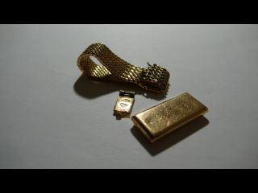

Nous sommes, depuis quelques temps déjà, fiancés. Mais voilà, il manquait les bagues. Et puis dans certains pays, c'est mieux de passer pour des mariés.
Jusque là, easy. Il suffit de s'acheter des alliances.
Mais là où ça se complique, c'est qu'on voulait se les faire nous même, et que niveau métallurgie, on est pas au top. Heureusement, Hélène telle une "Huggy les bons tuyaux" connait des gens bien placés... son copain Alex le prothésiste dentaire qui niveau métallurgie en connait un sacré rayon !
Mission 1 : Au labo, on sculpte les alliances en résine calcinable, et on obtient sans trop de difficultés ce qu'on voulait, des alliances presque rondes et presque régulières.
Là on se dit, maintenant ça va être facile.
Mission 2 : Trouver de l'or.

Facile.
Ben non, beaucoup plus difficile que prévu...
En effet et contre toute attente :
- les pièces d'or, genre Napoléon sont en 900/1000ème, ce qui fait que c'est trop mou pour faire une alliance
- les bijoux en or dans les bijouterie valent une fortune quand on regarde le prix au poids(même chez Tati dont les chevalières kitch sont creuses). En plus les bijoutiers font la gueule quand on leur dit "on voudrait un bijoux en or 18 carats pas cher, c'est pour le faire fondre siouplait monsieur."
- les boutiques qui achètent des débris d'or ne veulent pas en vendre.
- les vendeurs d'or ne vendent qu'aux bijoutiers.
- les bijoutiers ne vendent pas d'or brut.
Et là on a cru que c'était mort.
Jusqu'a ce qu'on tombe sur un gentil bijoutier (M. Peridot pour la pub) qui nous donne le sésame. Il nous dit "Cherchez des bijoutiers d'occasion sur internet, et ne dites pas que vous voulez acheter de l'or car ils n'ont pas le droit d'en vendre, dites que vous voulez acheter un bijou de 12 grammes même en mauvais état, il comprendra."
Bizarre, et pourtant...ça marche ! Premier appel bingo, la dame me dit "ah oui, je dois avoir un bijou qui correspond à ce que vous cherchez."
J'arrive à la boutique, et tu parles d'un bijou, elle avait décidément très bien compris ce qu'on voulait faire puisque voilà ce qu'elle me sort :
 Des bouts de montre cassée. Et sur la facture elle marque "bijoux or". J'ai trouvé plus filou qu'un banquier...
En tout cas, Alléluia, nous avons de quoi fondre, et la suite en image sur l'
album